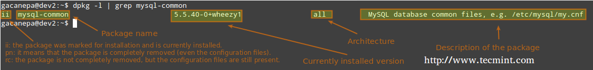
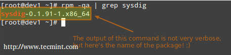
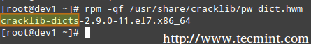
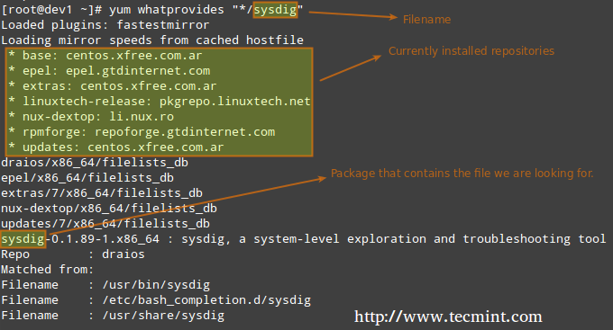
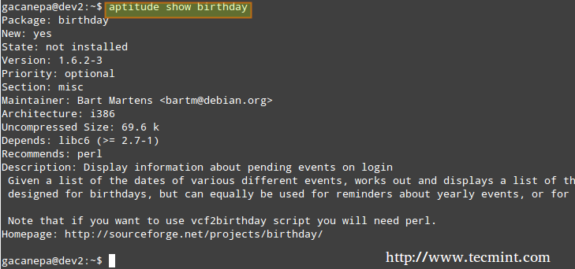

LFCS 系列第九讲: 使用 Yum、RPM、Apt、Dpkg、Aptitude 进行 Linux 软件包管理
| 2016-06-13 08:24 评论: 1 收藏: 7
去年八月, Linux基金会宣布了一个全新的LFCS（Linux基金会认证系统管理员）认证计划，这对广大系统管理员来说是一个很好的机会，管理员们可以通过认证考试来表明自己可以成功支持Linux系统的整体运营。 一个Linux基金会认证的系统管理员能有足够的专业知识来确保系统高效运行，提供第一手的故障诊断和监视，并且在需要的情况下将问题提交给工程师支持团队。
Linux基金会认证系统管理员 – 第九讲
请观看下面关于Linux基金会认证计划的演示。
本文是本系列教程中的第九讲，今天在这篇文章中我们会引导你学习Linux软件包管理，这也是LFCS认证考试所需要的。
软件包管理
简单的说，软件包管理是系统中安装和维护软件的一种方法，这里说的维护包含更新和卸载。
在Linux早期，程序只以源代码的方式发行，还带有所需的用户使用手册和必备的配置文件，甚至更多。现如今，大多数发行商一般使用预装程序或者被称为软件包的程序集合。用户可以使用这些预装程序或者软件包安装到该发行版中。然而，Linux最伟大的一点是我们仍然能够获得程序的源代码用来学习、改进和编译。
软件包管理系统是如何工作的
如果某一个软件包需要一定的资源，如共享库，或者需要另一个软件包，这就称之为依赖性。所有现在的包管理系统提供了一些解决依赖性的方法，以确保当安装一个软件包时，相关的依赖包也安装好了。
打包系统
几乎所有安装在现代Linux系统上的软件都会能互联网上找到。它要么由发行商通过中央仓库（中央仓库能包含几千个软件包，每个软件包都已经为发行版构建、测试并且维护好了）提供，要么能够直接得到可以下载和手动安装的源代码。
由于不同的发行版使用不同的打包系统（Debian的*.deb文件/CentOS的*.rpm文件/openSUSE的专门为openSUSE构建的*.rpm文件），因此为一个发行版开发的软件包会与其他发行版不兼容。然而，大多数发行版都属于LFCS认证所涉及的三个发行版家族之一。
高级和低级打包工具
为了有效地进行软件包管理的任务，你需要知道，有两种类型的实用工具：低级工具（能在后端实际安装、升级、卸载软件包文件），以及高级工具（负责确保能很好的执行依赖性解决和元数据检索的任务——元数据也称为数据的数据）。
| 发行版 | 低级工具 | 高级工具 |
|---|---|---|
| Debian版及其衍生版 | dpkg | apt-get / aptitude |
| CentOS版 | rpm | yum |
| openSUSE版 | rpm | zypper |
让我们来看下低级工具和高级工具的描述。
dpkg的是基于Debian的系统的一个低级包管理器。它可以安装，删除，提供有关资料，以及建立*.deb包，但它不能自动下载并安装它们相应的依赖包。
- 阅读更多： 15个dpkg命令实例
apt-get是Debian及其衍生版的高级包管理器，并提供命令行方式来从多个来源检索和安装软件包，其中包括解决依赖性。和dpkg不同的是，apt-get不是直接基于.deb文件工作，而是基于软件包的正确名称。
- 阅读更多： 25个apt-get命令实例
Aptitude是基于Debian的系统的另一个高级包管理器，它可用于快速简便的执行管理任务（安装，升级和删除软件包，还可以自动处理解决依赖性）。它在atp-get的基础上提供了更多功能，例如提供对软件包的几个版本的访问。
rpm是Linux标准基础（LSB）兼容发行版所使用的一种软件包管理器，用来对软件包进行低级处理。就像dpkg一样，rpm可以查询、安装、检验、升级和卸载软件包，它多数用于基于Fedora的系统，比如RHEL和CentOS。
- 阅读更多： 20个rpm命令实例
相对于基于RPM的系统，yum增加了系统自动更新的功能和带依赖性管理的软件包管理功能。作为一个高级工具，和apt-get或者aptitude相似，yum需要配合仓库工作。
- 阅读更多： 20个yum命令实例
低级工具的常见用法
使用低级工具处理最常见的任务如下。
1. 从已编译（*.deb或*.rpm）的文件安装一个软件包
这种安装方法的缺点是没有提供解决依赖性的方案。当你在发行版本库中无法获得某个软件包并且又不能通过高级工具下载安装时，你很可能会从一个已编译文件安装该软件包。因为低级工具不会解决依赖性问题，所以当安装一个没有解决依赖性的软件包时会出现出错并且退出。
# dpkg -i file.deb [Debian版和衍生版]
# rpm -i file.rpm [CentOS版 / openSUSE版]
注意：不要试图在CentOS中安装一个为openSUSE构建的.rpm文件，反之亦然！
2. 从已编译文件中更新一个软件包
同样，当某个安装的软件包不在中央仓库中时，你只能手动升级该软件包。
# dpkg -i file.deb [Debian版和衍生版]
# rpm -U file.rpm [CentOS版 / openSUSE版]
3. 列举安装的软件包
当你第一次接触一个已经在工作中的系统时，很可能你会想知道安装了哪些软件包。
# dpkg -l [Debian版和衍生版]
# rpm -qa [CentOS版 / openSUSE版]
如果你想知道一个特定的软件包安装在哪儿，你可以使用管道命令从以上命令的输出中去搜索，这在这个系列的第一讲 操作Linux文件 中有介绍。例如我们需要验证mysql-common这个软件包是否安装在Ubuntu系统中：
# dpkg -l | grep mysql-common

检查安装的软件包
另外一种方式来判断一个软件包是否已安装。
# dpkg --status package_name [Debian版和衍生版]
# rpm -q package_name [CentOS版 / openSUSE版]
例如，让我们找出sysdig软件包是否安装在我们的系统。
# rpm -qa | grep sysdig

检查sysdig软件包
4. 查询一个文件是由哪个软件包安装的
# dpkg --search file_name
# rpm -qf file_name
例如，pw_dict.hwm文件是由那个软件包安装的？
# rpm -qf /usr/share/cracklib/pw_dict.hwm

Linux中查询文件
高级工具的常见用法
使用高级工具处理最常见的任务如下。
1. 搜索软件包
aptitude的更新操作将会更新可用的软件包列表，而aptitude的搜索操作会根据软件包名进行实际搜索。
# aptitude update && aptitude search package_name
在search all选项中，yum不仅可以通过软件包名还可以通过软件包的描述搜索。
# yum search package_name
# yum search all package_name
# yum whatprovides “*/package_name”
假定我们需要一个名为sysdig文件，想知道我们需要安装哪个软件包才行，那么运行。
# yum whatprovides “*/sysdig”

检查软件包描述
whatprovides告诉yum搜索一个含有能够匹配上述正则表达式的文件的软件包。
# zypper refresh && zypper search package_name [在openSUSE上]
2. 从仓库安装一个软件包
当安装一个软件包时，在软件包管理器解决了所有依赖性问题后，可能会提醒你确认安装。需要注意的是运行更新（ update）或刷新（refresh）（根据所使用的软件包管理器）不是绝对必要，但是考虑到安全性和依赖性的原因，保持安装的软件包是最新的是系统管理员的一个好经验。
# aptitude update && aptitude install package_name [Debian版和衍生版]
# yum update && yum install package_name [CentOS版]
# zypper refresh && zypper install package_name [openSUSE版]
3. 卸载软件包
remove选项将会卸载软件包，但把配置文件保留完好，然而purge选项将从系统中完全删去该程序以及相关内容。
# aptitude remove / purge package_name
# yum erase package_name
###---注意要卸载的openSUSE包前面的减号 ---
# zypper remove -package_name
在默认情况下，大部分（如果不是全部的话）的软件包管理器会提示你，在你实际卸载之前你是否确定要继续卸载。所以，请仔细阅读屏幕上的信息，以避免陷入不必要的麻烦！
4. 显示软件包的信息
下面的命令将会显示birthday这个软件包的信息。
# aptitude show birthday
# yum info birthday
# zypper info birthday

检查包信息
总结
作为一个系统管理员，软件包管理器是你不能回避的东西。你应该立即去使用本文中介绍的这些工具。希望你在准备LFCS考试和日常工作中会觉得这些工具好用。欢迎在下面留下您的意见或问题，我们将尽可能快的回复你。
via： http://www.tecmint.com/linux-package-management/
作者：Gabriel Cánepa 译者：Flowsnow 校对：wxy